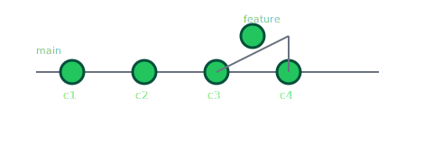

¿Qué es Git?
Git es un sistema de control de versiones distribuido. Te permite guardar el historial de cambios de tu código, trabajar con ramas y colaborar con otras personas.
Instalación y configuración inicial
1. Verificar si tienes Git instalado
$ git --version2. Configuración básica de usuario
$ git config --global user.name "Tu Nombre"
$ git config --global user.email "tu@email.com"
$ git config --global init.defaultBranch mainFlujo básico de trabajo con Git
1. Inicializar un repositorio
$ git init2. Ver el estado actual
$ git status3. Añadir archivos al área de staging
$ git add nombre-archivo
$ git add . # Añadir todos los cambios4. Crear un commit
$ git commit -m "mensaje descriptivo del cambio"5. Ver el historial de commits
$ git log --oneline --graph --decorate --allTrabajo con ramas
1. Listar ramas
$ git branch2. Crear una nueva rama
$ git branch nombre-rama3. Cambiar de rama
$ git switch nombre-rama
# o
$ git checkout nombre-rama4. Crear y cambiar a una rama en un solo paso
$ git switch -c nombre-rama5. Unir una rama a main
$ git switch main
$ git merge nombre-ramaRepositorios remotos (GitHub, GitLab, etc.)
1. Clonar un repositorio existente
$ git clone https://url-del-repo.git2. Ver los remotos configurados
$ git remote -v3. Añadir un remoto
$ git remote add origin https://url-del-repo.git4. Enviar cambios al remoto
$ git push -u origin main # Primer push de la rama main
$ git push # Siguientes pushes5. Traer cambios del remoto
$ git pull # Descarga y fusiona cambios
$ git fetch # Solo descarga, sin fusionarEjemplo de flujo completo
Imagina que creamos este mismo proyecto desde cero:
# 1. Crear carpeta y entrar
$ mkdir git-docs-site
$ cd git-docs-site
# 2. Inicializar Git
$ git init
# 3. Crear archivos (index.html, assets, README.md, etc.)
# 4. Ver estado
$ git status
# 5. Añadir todo y hacer primer commit
$ git add .
$ git commit -m "feat: estructura inicial de documentación"
# 6. Crear rama para nueva sección
$ git switch -c feature/seccion-avanzada
# 7. Editas archivos, luego:
$ git add index.html
$ git commit -m "feat: seccion avanzada de comandos Git"
# 8. Volver a main y mezclar
$ git switch main
$ git merge feature/seccion-avanzadaFlujo de trabajo con ramas
Ejemplo real del flujo que usaste en este proyecto para trabajar con una rama
y luego mezclarla en main.
1. Crear y cambiar a una rama nueva
$ git switch -c feature/rama-ejemplo2. Hacer cambios y commitear
# Editas index.html y luego:
$ git add index.html
$ git commit -m "Add section about branch workflow"3. Volver a main y hacer merge
$ git switch main
$ git merge feature/rama-ejemplo
Este patrón (crear rama → trabajar → hacer commits → volver a main →
merge) es la base de la colaboración en Git.
Comandos avanzados de Git
Algunos comandos útiles para trabajar con cambios temporales, reescribir historia y marcar versiones importantes.
git stash: guardar cambios sin commit
Ideal cuando quieres cambiar de rama pero aún no quieres commitear.
# Guardar cambios actuales en un stash
$ git stash push -m "Mensaje descriptivo"
# Ver stashes guardados
$ git stash list
# Recuperar el último stash
$ git stash popgit rebase: reescribir historia sobre otra rama
Reaplica tus commits encima de otra rama (por ejemplo, para “actualizar” tu rama
con lo último de main).
# Estando en tu rama de trabajo
$ git switch mi-rama
$ git rebase main
# Si hay conflictos:
# 1. Arreglas el archivo
$ git add archivo-conflictivo
# 2. Continúas el rebase
$ git rebase --continuegit tag: marcar versiones
Sirve para marcar puntos importantes en el historial, como versiones v1.0.0.
# Crear un tag anotado en el commit actual
$ git tag -a v1.0.0 -m "Primera versión del sitio"
# Ver tags
$ git tag
# Ver detalles de un tag
$ git show v1.0.0Deploy con GitHub Pages
Estos son, resumidos, los pasos que seguiste para publicar este sitio estático usando GitHub Pages.
1. Subir el repositorio a GitHub
- Crear un repositorio vacío en GitHub (sin README, ni .gitignore, ni licencia).
- Configurar el remoto en tu proyecto local:
$ git remote add origin https://github.com/TU_USUARIO/git-docs-site.git
$ git push -u origin main2. Activar GitHub Pages
- Ir a Settings > Pages dentro del repositorio en GitHub.
- En Build and deployment, elegir:
- Source: Deploy from a branch
- Branch:
mainy carpeta/ (root)
- Guardar la configuración y esperar unos segundos.
3. Ver el sitio online
GitHub genera una URL del estilo:
https://codedevcoder.github.io/git-docs-site/
Cada vez que hagas cambios en main y hagas git push,
GitHub Pages reconstruirá automáticamente la página con la última versión.